A lo largo de tu aprendizaje en el área has estudiado las operaciones aritméticas y conoces que para cada una de ellas se determina su inversa. Por ejemplo, la inversa de la adición es la sustracción, de la multiplicación es la división, de la potenciación es la radicación. En cada caso, la segunda operación "deshace" a la primera y viceversa. El interés de estos procesos de operaciones inversas radica en la utilidad que tienen para solucionar ecuaciones. Si queremos resolver ecuaciones que incluyan derivadas, necesitaremos su inversa, denominada antiderivación. En el presente capítulo veremos este proceso, inverso a la derivación, es decir, dada la derivada f' (x), hallar la función f(x). Así, una derivada tendrá su correspondiente antiderivada.
-
01
La antiderivada
Open or Close01.1La primitiva de una función
La antiderivada de una función también se conoce con el nombre de primitiva de la función y consiste en determinar la función original F(x) conociendo su función derivada F' (x).
Una particularidad de las antiderivadas es que no son únicas. Si recordamos la derivada de una función constante es cero, entonces si F(x) es una antiderivada de f(x), también lo es G(x), definida por G(x) = F(x) + C, para cualquier número C.
Por ejemplo, si f(x) = 4x3, entonces las funciones G(x) y H(x) definidas por las expresiones G(x) = x4 + 3, H(x) = x4 + ?2, entre otras, son antiderivadas de f(x).
En general, si F(x) es una antiderivada de f(x), en un intervalo, entonces cualquiera otra antiderivada de f(x) tiene la forma F(x) + C, donde C es una constante arbitraria.
Así que, si una función f tiene una antiderivada, tendrá una familia de ellas, y cada miembro de esta familia puede obtenerse de uno de ellos mediante la adición de una constante adecuada.
La función F(x) + C se llama la antiderivada general de f(x).
En la gráfica se muestra una familia de funciones F(x) en las que C es una constante arbitraria.
Ejemplo 1
Hallar una primitiva F de la función G(x) = x4 + 3.
Anteriormente se dedujo que F(x) = 4x3 es una primitiva de G(x), ya que la derivada de G(x) es igual a f(x). Luego F(x) = 4x3 + 4.
Ejemplo 2
Si f(x) = cos 3x + 2x, definir la primitiva F de la función f.
Se calcula la derivada implícita de f.
Si f(x) = cos 3x + 2x, entonces F(x) = (-sen 3x)(3) + 2 = -3(sen 3x) + 2.
Practica
01.2La integral indefinida
Las antiderivadas de una función forman una familia de funciones cuya representación gráfica se diferencia una de otra solamente en un número.
La integral indefinida
Al conjunto de todas las antiderivadas de una función f(x) se le llama integral indefinida de f(x), y se representa como:
Se lee la integral indefinida de f(x) respecto a x.
Por ejemplo, si f(x) = y = x2 + x - 2, entonces f´ (x) = dy = (2x + 1) dx y la integral indefinida es:
Luego, se puede concluir que:

C es llamada la constante de integración.
01.2.1Propiedades de la integral indefinida
Si f(x) y g(x) son dos funciones que tienen integral indefinida, y k es una constante, entonces:

A partir de la tabla de derivación se puede obtener una serie de integrales llamadas integrales inmediatas, es decir, aquellas que se pueden determinar directamente, sin necesidad de realizar ningún cambio o transformación. Por ejemplo:
- La integral de la función nula f(x) = 0 es:
- La integral de la función constante f(x) = k es:
- La integral de la función f(x) = x es:

- La integral de la función f(x) = 1 es:
- La integral de la función potencia f(x) = xn, con n ? -1, es:
Veamos cómo descomponer algunas integrales en otras más sencillas aplicando las integrales inmediatas dadas.
Para cada caso resolver las integrales.
Por tanto:
Luego:
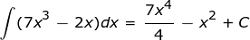
Entonces:
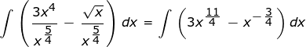Finalmente:
5. Determinar f(x) para la cual su derivada es la función f' (x) = x2 - 3x + csc2x.
Por tanto, se concluye que:
A continuación se presenta una primera lista de primitivas inmediatas que surgen directamente de derivadas ya conocidas.
Primitiva de funciones algebraicas Primitiva de funciones trascendentes 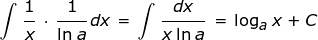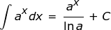Primitiva de funciones trigonométricas 

Ejemplo 3
Usando la tabla de integrales inmediatas, encontrar la integral indefinida de cada función.
Por tanto:
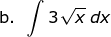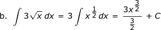Se concluye que:
Por tanto, se obtiene:

Finalmente se concluye que:
01.2.2Soluciones particulares
Se ha dicho que las antiderivadas de una función forman una familia de funciones, cuyas soluciones se diferencian una de otra solo por la constante de integración C.
Por ejemplo, la integral de la función f(x) = 5x2 + 2x - 3 es:
Finalmente:

Si se sustituye el valor de C por distintos valores, se obtienen algunas integrales de la función f(x) dada.
Ahora, si el planteamiento del ejercicio brinda información adicional, es posible obtener una solución particular de una integral dada. A este tipo de información se le llama condición inicial.
Recuerda
Una condición inicial se da cuando se conoce el valor de F(x) para un valor x dado.
Por ejemplo, calcular una solución particular para la función F(x) = (5x2 + 2x - 3) dx si F(0) = 2.
En este caso, la solución particular determina que si F(x) = 5/3x3 + x2 - 3x + C, entonces:
2 = 5/3(0)3 + (0)2 - 0 + C
Al resolver la ecuación se obtiene que C = 2.
Así, la solución particular para la integral es:
F(x) = 5/3x3 + x2 - 3x + 2
Al igual que la derivación, la integración resulta un método útil para encontrar la ecuación de una recta o solucionar problemas de física o de otras áreas.
Veamos:
Encontrar la función f(x) que pasa por el punto (0, 2), f " (x) 2x - 1 y la pendiente de la recta tangente en dicho punto es m = 4.
Como la función pasa por el punto (0, 2), entonces f(0) = 2. Además, como la pendiente de la recta tangente de la función en x = 0 es 4, entonces f ' (0) = 4. Luego, se halla f ' (x), con f ' (0) = 4, como sigue:
Se sustituye x = 0:
f ' (0) = (0)2 - (0) + C
Se sustituye f ' (0) = 4:
4 = C
De esa forma:
f ' (x) = x2 - x + 4
En el campo de la física es posible analizar lo siguiente: si una partícula se mueve en línea recta, la función de posición s(t) es una antiderivada de su función de velocidad v(t); es decir, s' (t) = v(t).
Igualmente, como la velocidad es una antiderivada de la aceleración, se tiene que v' (t) = a(t).
Teniendo condiciones iníciales, puede determinarse la función de posición de una partícula a partir de la función de aceleración de la partícula. Observa.
Determinar la función de posición de una partícula que parte del reposo, en la posición s = 3 y cuya aceleración en el tiempo t, es a(t) = 15 m/s2.
Si s(t) es la posición de un objeto, v(t) su velocidad y a(t) su aceleración en función del tiempo t, entonces:
Así se facilita el cálculo de v(t).
Como la partícula parte del reposo se sabe que C = 0.
Por tanto, v(t) = 15t m/s.
Ahora se reemplaza para hallar s(t).
Como B = 3, finalmente se obtiene:
Profundiza
01.3Consolidación
Actividades para consolidar lo que has aprendido en esta sección.
-
02
Métodos de integración
Open or CloseEn ocasiones no es posible calcular la integral inmediata de una función. Por tal razón, es necesario aplicar otros métodos que permitan obtener una expresión equivalente que haga posible aplicar las propiedades de las integrales o alguna fórmula de integrales inmediatas. Los métodos que se estudiarán en esta sección se denominan la integración por sustitución y la integración por partes.
02.1La integración por sustitución
La integración por sustitución tiene su fundamento en la regla de la cadena para derivar funciones compuestas y consiste en realizar un cambio de variable en la función a la cual se le va a hallar la integral para obtener una expresión que sea más fácil de integrar.
La integración por sustitución
Si f y g son funciones derivables tales que y = f(g(x)) y F es una antiderivada de f, entonces:
Si se considera que u = g(x), entonces du = g' (x) dx, entonces:
Ejemplo 1
Evaluar la siguiente integral.
Sea g(x) = x4 + 3x; entonces g´ (x) = 4x3 + 3.
Así, por la regla anterior, se obtiene:
Ejemplo 2
Hallar la siguiente integral empleando el método de sustitución.
Sea u = x3 + 6x; entonces du = (3x2 + 6) dx
Pero, (6x2 + 12) = 2(3x2 + 6) = 2 du, y en consecuencia:
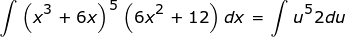Así se puede afirmar que:
Ejemplo 3
Calcular la siguiente integral.
Sea u = (x2 + 4); entonces du = 2xdx, por tanto:
Ejemplo 4
Calcular la siguiente integral.

Si u = x2, entonces:
Entonces
También se pueden calcular las integrales usando el método de sustitución o desarrollando el integrando, y observando cómo varían las constantes de integración.
En el siguiente ejemplo se presenta una aplicación.
Ejemplo 5
Cerca de la superficie de la Tierra, la aceleración a la que cae un objeto, debida a la gravedad, es de 10 metros por segundo por segundo (m/s2), siempre y cuando sea posible despreciar la resistencia del aire. Si un objeto se lanza directamente hacia arriba desde una altura inicial de 300 metros a una velocidad de 15 metros por segundo (m/s), ¿cuál es su velocidad y altura 4 segundos después del lanzamiento?
Objeto en caída libre.
Supongamos que la altura s se considera positiva hacia arriba. Entonces v = ds/dt inicialmente es positiva (s está aumentando con relación al punto de lanzamiento), pero a = dv/dt es negativa (la fuerza que ejerce la gravedad es descendente, por lo que el valor v disminuye).
Como v = 15 en t = 0, entonces se obtiene que C = 15, y así:
v = -10t + 15
Ahora, v = ds/dt, entonces:
ds/dt = -10t + 15
ds = (-10t + 15) dt
Al integrar ambos términos se obtiene
s = -5t2 + 15t + K
Como s = 300 en t = 0, se calcula que K = 300, por tanto:
s = -5t2 + 15t + 300
Finalmente, en t = 4:
v = -10(4) + 15 = -25 m/s
s = -5(4)2 + 15(4) + 300 = 280 m
Observa que si v = vo y s = so en t = 0, se obtienen las conocidas fórmulas de caída libre de un cuerpo.
a = -10
v = -5t + vo
s = -5t2 + vot + so
02.2La integración por partes
El procedimiento de integración por partes tiene su fundamento en la regla de derivación del producto de dos funciones, en el caso de que una de ellas sea la derivada de una función fácil de obtener.
Así, la derivada de la función (f(x) g(x))' = f' (x) g(x) + f(x) g' (x), entonces:
f(x) g' (x) = (f(x) g(x))' - f' (x) g(x)
Al calcular la integral de los dos miembros de la igualdad, resulta:
La integración por partes
Para calcular la integral de una función por partes se aplica la siguiente fórmula:

Generalmente, aplicando cambio de variables se utiliza la fórmula equivalente:
Esta expresión sirve para calcular el producto de dos funciones, donde una de ellas es la derivada de una función conocida y la integral original es equivalente a otra más simple de hallar.
Para aplicar el método de integración por partes es conveniente:
- Determinar entre las expresiones del integrando u y dv.
- Derivar u para determinar du.
- Se integra dv para hallar la función v.
- Se aplica la fórmula de integración por partes y se soluciona la integral dada.
Ejemplo 6
Hallar la siguiente integral.
Sean u = x y dv = cos xdx.
Entonces: du = dx y v = sen x
Al reemplazar en la fórmula se obtiene:
La integral que aparece a la derecha de esta expresión es conocida. Por tanto, tenemos:
Ejemplo 7
Hallar la integral dada aplicando la integración por partes.
Sean u = x2 y dv = exdx.
Entonces: du = 2x dx y v = ex
Reemplazando se llega a:
En este caso, la segunda integral es más fácil que la primera, pero necesitamos continuar de la misma manera. Cuando la segunda integral se integra por partes así:
u = x y dv = ex dx
De modo que du = dx y v = ex, entonces:
Se reemplaza en la ecuación 1, y el resultado final es:
En ocasiones ocurre que la integral con la que se comienza aparece por segunda vez durante la integración por partes. En este caso es posible resolver la ecuación mediante la aplicación del álgebra elemental. Veamos.
Ejemplo 8
Resolver la siguiente integral.
Por facilidad, se denota la integral por j. Según el proceso de integración por partes:
u = ex y dv = cos xdx
Entonces: du = ex dx y v = sen x, por tanto:
Observa que el segundo término de la derecha de la igualdad no es tan fácil de integrar, pero se puede aplicar de nuevo la integración por partes, así:
u = ex y dv = sen xdx
du = ex dx y v = -cos x
Por consiguiente:
Notemos que la integral del segundo miembro es nuevamente j, por tanto, se escribe:
Al reemplazar esta ecuación en la ecuación 1, se llega a:
Es fácil resolver la ecuación para hallar j:
De donde:
Finalmente, solo se agrega la constante de integración:
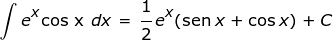Recuerda
La expresión general para la integración por partes

consiste en seleccionar una parte del integrando como u y la restante como dv, de manera que dv sea fácilmente integrable para obtener v y la integral de la derecha corresponde a una integral simple de fácil deducción.
02.3Integrales de funciones trigonométricas
Algunas de las funciones trigonométricas se pueden expresar como productos o cocientes de otras funciones cuyas integrales ya son conocidas.
Ejemplo 9
Determinar la integral.
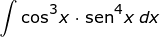En este caso, se tiene que la función cos3x tiene exponente impar y sen4x exponente par, así que se puede realizar la siguiente sustitución:
u = sen x y al derivar se obtiene du = cos xdx.
Entonces:

Como u = sen x, entonces:
Ejemplo 10
Calcular la siguiente integral.

Practica
02.4Consolidación
Actividades para afianzar lo aprendido en esta sección.
-
03
Áreas
Open or CloseEs fácil calcular el área de una región plana cuando está limitada por segmentos de recta. Por ejemplo, si la región es un rectángulo, un triángulo o cualquier polígono que se pueda dividir en triángulos, existen fórmulas que permiten determinar su área.
Para encontrar áreas de regiones cuyos límites no son segmentos rectos, sino gráficas de funciones, es necesario utilizar un proceso que se fundamenta en el concepto de límite.
Por ejemplo, la siguiente gráfica muestra una región S en un plano coordenado, limitada por segmentos de rectas verticales que intersecan al eje X en el punto
x = a y en el punto x = b, por el eje X y por la gráfica de la función y = f(x), continua y no negativa en el intervalo [a, b].Las áreas de los rectángulos por encima de la curva, son el área por exceso.
Como ninguna porción de la gráfica está por debajo del eje X, se dice que S es la región bajo la gráfica de f entre los puntos a y b.
Para calcular el área de S se hace una partición del intervalo [a, b] en partes iguales, formando rectángulos de igual base. Algunos de estos rectángulos quedan por encima de la curva y otros por debajo de ella, como se muestra en la imagen anterior.
La suma de las áreas de los rectángulos de la gráfica, S1, constituye una aproximación por exceso del área que se quiere determinar.
La suma de las áreas de los rectángulos de la gráfica, S2, constituye una aproximación por defecto del área bajo la curva.
Las áreas sin sombrear, por debajo de la curva, constituyen el área por defecto.
Si se considera una partición del intervalo [a, b] en partes iguales, pero con rectángulos de menor base, se obtiene una aproximación mayor al área buscada.
Luego, el área S de la región bajo la curva es la suma de las áreas de los rectángulos obtenidos cuando n (número de rectángulos) es muy grande y su base (?x) es muy pequeña. Así:
Cuanto menor sea la base de los rectángulos elementales, menor será el área sombreada.
03.1La integral definida
Una función f continua y no negativa, tiene área bajo su gráfica si la amplitud de la partición ?x tiende a cero, entonces el límite de las aproximaciones por exceso es igual al límite de las aproximaciones por defecto.
La integral definida
Se llama integral definida entre a y b de f(x), al área de la porción de plano limitado por la gráfica de la función f(x), el eje X y las rectas x = a y x = b. Se denota así:
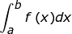Si la integral definida de f desde a hasta b existe, se dice que f es integrable en el intervalo cerrado [a, b].
Los números a y b se llaman límites de integración. El punto a es el límite inferior y el punto b es el límite superior.
La función f(x) a la derecha del signo de la integral se llama integrando.
El área bajo la curva se representa con la integral de f(x) en el intervalo [a, b].
03.2Propiedades de la integral definida
Para enunciar las propiedades más importantes de la integral definida es necesario aclarar que las funciones f y g son integrables en [a, b], y k es una constante.
-
Propiedad 1: si la
base del área de la región bajo la curva es cero, el área es cero
y se denota así:
La base del rectángulo es cero y su área será nula.
-
Propiedad 2: el área
de la región bajo la curva siempre será positiva si f(x) es positiva. Es decir, para todo x en el intervalo [a, b] y f(x) > 0 se cumple que: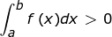
El área bajo la curva sobre el eje X es positiva.
-
Propiedad 3: el área
de la región bajo la curva siempre será negativa si f(x) es negativa. Es decir, para todo x en el intervalo [a, b] y f(x) < 0 se cumple que: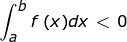
El área mostrada, debajo del eje X, es negativa.
-
Propiedad 4: si f es una función integrable en un intervalo que contiene
los puntos a, b y c, tal que a < c < b, entonces: 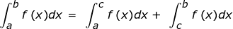
El área total será la suma de las áreas parciales determinadas por los intervalos.
-
Propiedad 5: si f y g son funciones integrables en [a, b], entonces también lo son las funciones f + g y f - g. Es decir: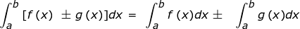
-
Propiedad 6: para
todo real k constante se cumple: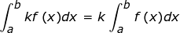
-
Propiedad 7: si se
intercambian los límites de integración cambia el signo de la integral.
-
Propiedad 8: si f y g son funciones integrables en el
intervalo [a, b] y si f(x) ? g(x) para todo x que pertenezca al intervalo,
entonces: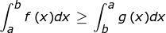
-
Propiedad 9: si la
función es constante, su integral es el producto de la constante por
la diferencia de los límites de integración.
Ejemplo 1
Realizar la representación gráfica de la integral definida por:
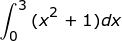La región que representa la integral dada es la limitada por la función f(x) = x2 + 1, en el intervalo [0, 3].
El área de la región sombreada corresponde a la integral de la función f(x).
Ejemplo 2
Calcular la integral definida de la función que se representa en la gráfica.
El área de la región sombreada corresponde a la integral de la función f(x).
En la gráfica se observa que la región que demarca la integral definida de f(x) es la limitada f(x) = x + 1, el eje X y las rectas x = 1 y x = 5.
La región corresponde a un trapecio de altura 4 cm y bases paralelas de 2 cm y 6 cm.
Entonces, se aplica la fórmula del área del trapecio:
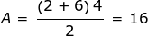Luego:
Ejemplo 3
Determinar el valor de las siguientes integrales, si:
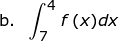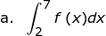Entonces:
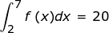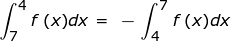Luego:
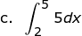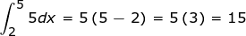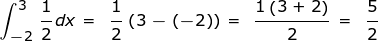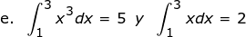Con esa información calcular
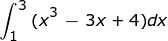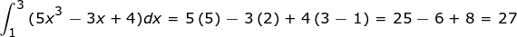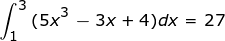03.3Consolidación
Actividades para afianzar lo aprendido en esta sección.
-
Propiedad 1: si la
base del área de la región bajo la curva es cero, el área es cero
y se denota así:
-
04
Relación entre integración y derivación
Open or Close04.1Primer teorema fundamental del cálculo
El teorema que se presenta a continuación recibe el nombre de teorema fundamental del cálculo, ya que expresa, de manera concisa, la relación entre el cálculo diferencial y el cálculo integral.
Primer teorema fundamental del cálculo
Sea f una función continua en un intervalo cerrado [a, b]. Si F es una función definida por
entonces es F continua y derivable en (a, b) y, además, es una antiderivada de f en [a, b]; es decir, F'(x) = f(x) para todo x en el intervalo [a, b].
Ejemplo 1
Determinar la función f ' (x) si
Primero se calcula la integral:
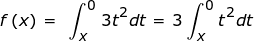Se evalúa la función entre x y 0 y se obtiene f(x).
f(x) = x3
Entonces f ' (x) = 3x2.
04.2Segundo teorema fundamental del cálculo
El teorema que se muestra a continuación, y que puede considerarse como la segunda parte del teorema anterior, suele emplearse para encontrar la integral definida sin usar límites de sumas. El método se conoce como regla de Barrow.
La regla de Barrow
Si f es una función continua en un intervalo cerrado [a, b] y si F es una antiderivada de f, entonces
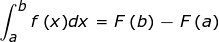Para calcular las integrales definidas usando la regla de Barrow, se pueden seguir los siguientes pasos:
- Determinar una función F(x), tal que F' (x) = f(x).
- Evaluar F(x) en los límites de integración, es decir, F(a) y F(b).
- Calcular la diferencia entre F(a) y F(b), es decir, F(a) - F(b).
Ejemplo 2
Usando la regla de Barrow, evaluar las siguientes integrales
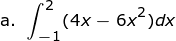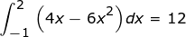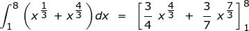Al calcular ese valor se obtiene aproximadamente 65,68.
En ocasiones, es necesario utilizar algunos de los métodos de integración, que ya hemos visto, para calcular la integral definida y aplicar la regla de Barrow.
Ejemplo 3
Evaluar la siguiente integral.
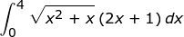En este caso se utiliza el método de sustitución así:
Sea u = x2 + x, entonces du = 2x + 1, por tanto:
Entonces, aplicando el segundo teorema fundamental del cálculo, se llega a:
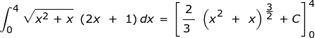Practica
04.3Consolidación
Actividades para afianzar lo aprendido en esta sección.
-
05
Cálculo de áreas por integración
Open or CloseUna de las aplicaciones de la integral definida es el cálculo del área de una región plana.
Cálculo del área de una región
Sea f una función continua en el intervalo [a, b], tal que f(x) ? 0.
La región limitada por f(x), las rectas x = a, x = b y el eje X tiene por área
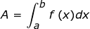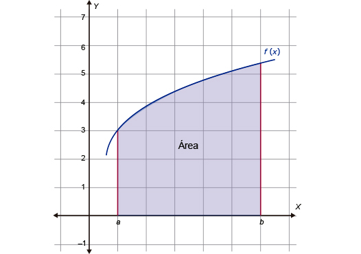El área bajo la curva está determinada por el valor de la integral en el intervalo [a, b].
Ejemplo 1
Hallar el área de cada región limitada por x = 1, x = 3 y la función f(x) = x2 - x. Trazar la gráfica. Para iniciar, se calcula el área bajo la curva con las condiciones dadas, así:
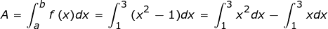En la siguiente figura se ilustra la región.
Gráfica de la función f(x) = x2 - x.
La función f continua, frecuentemente, determina dos o más regiones separadas por el eje X. En este caso, se calculan las áreas de las regiones por separado, adicionando las áreas que están por encima del eje X y sustrayendo las áreas que resultan debajo del mismo.
Función continua con áreas por encima y por debajo del eje X.
Ejemplo 2
Encontrar el área de la región determinada por y = x3 + x2 - 5x - 3, y limitada por las rectas x = -2, x = 2 y el eje X.
En la siguiente figura se ilustra la región.
Gráfica de la función y = x3 + x2 - 5x - 3
Se observa que una parte está por encima del eje X y otra está debajo. Estas dos áreas se calculan por separado.
A = A1 - A2
De otro lado:
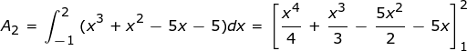Por tanto: A = A1 - A2
Ejemplo 3
Hallar el área de la región limitada por la función f(x) = cos x, el eje X y las rectas
x = 0 y x = 5?/2. Para iniciar, se identifican los intervalos donde la función f(x) es positiva y los intervalos donde es negativa.Gráfica de la función f(x) = cos x en el intervalo [0, 5?/2].
En la imagen se observa la gráfica de f(x). En ella se reconoce que en los intervalos [0, ?/2] ? [3 ?/2, 5?/2] la función es positiva y es negativa en el intervalo [?/2, 3?/2].
Por tanto, se definen las siguientes integrales:
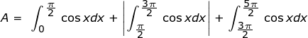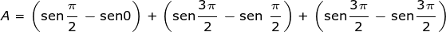05.1Consolidación
Actividades para afianzar lo aprendido en esta sección.
-
06
Competencias
Open or ClosePon a prueba tus capacidades y aplica lo aprendido con estos recursos.
-
Fin de unidad:
Open or Close
repaso